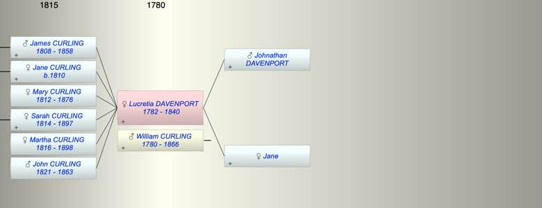

| [Index] |
| Lucretia DAVENPORT (1782 - 1840) |
|  |

|
| b. 1782 |
| +. William CURLING (1780 - 1866) |
| d. 1840 at Denmark Hill, Lambeth aged 58 |
| Parents: |
| Johnathan DAVENPORT |
| Jane |
| Children (6): |
| James CURLING (1808 - 1858) |
| Jane CURLING (1810 - ) |
| Mary CURLING (1812 - 1876) |
| Sarah CURLING (1814 - 1897) |
| Martha CURLING (1816 - 1898) |
| John CURLING (1821 - 1863) |
| Events in Lucretia DAVENPORT (1782 - 1840)'s life | |||||
| Date | Age | Event | Place | Notes | Src |
| 1782 | Lucretia DAVENPORT was born | ||||
| 26 May 1808 | 26 | Birth of son James CURLING | City of London | Note 1 | |
| 03 Dec 1810 | 28 | Birth of daughter Jane CURLING | City of London | Note 2 | |
| 06 Jul 1812 | 30 | Birth of daughter Mary CURLING | City of London | Note 3 | |
| 11 May 1814 | 32 | Birth of daughter Sarah CURLING | City of London | ex Non Conformist register FMP | |
| 01 Dec 1816 | 34 | Birth of daughter Martha CURLING | City of London | Note 4 | |
| 28 Apr 1821 | 39 | Birth of son John CURLING | City of London | Note 5 | |
| 1840 | 58 | Lucretia DAVENPORT died | Denmark Hill, Lambeth | Note 6 | |
| Created on a Mac™ using iFamily for Mac™ on 8 Oct 2023 |